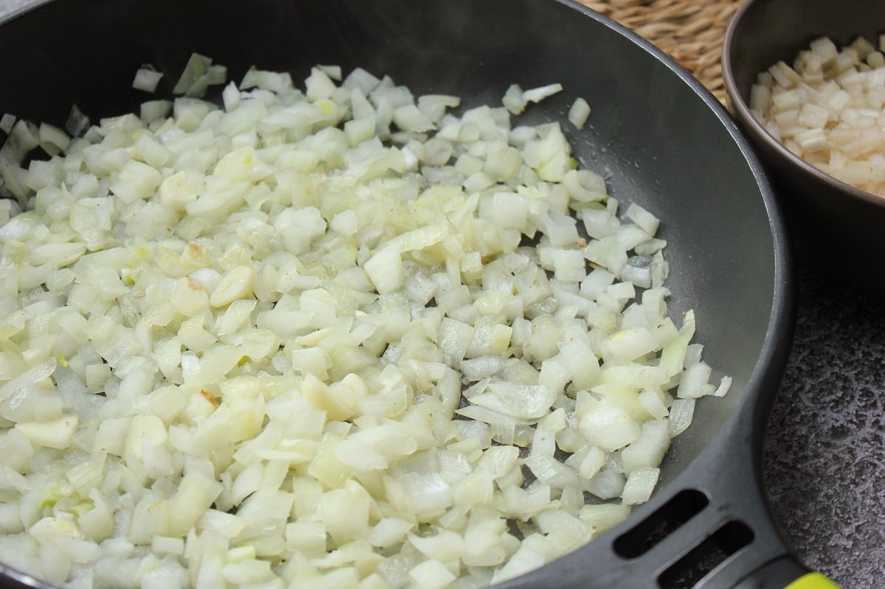
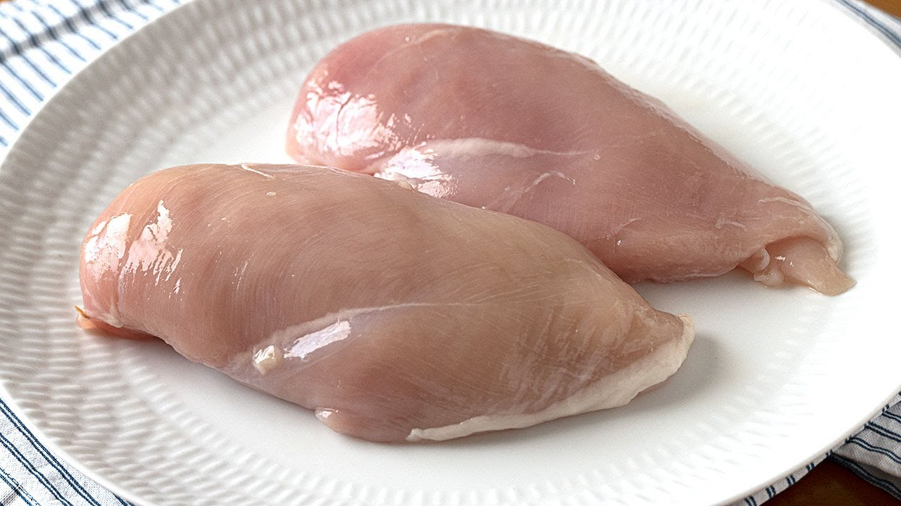
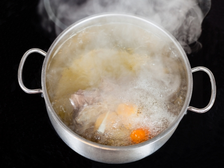
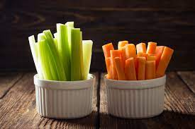
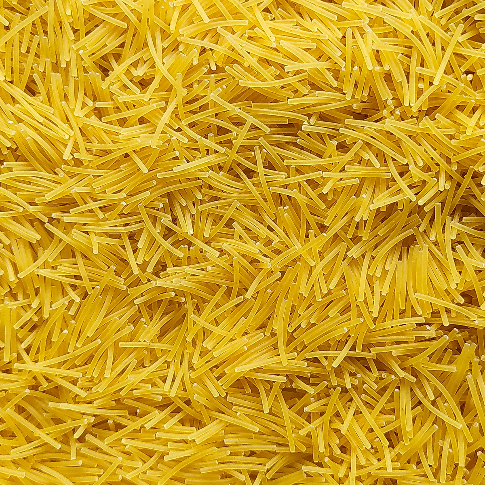
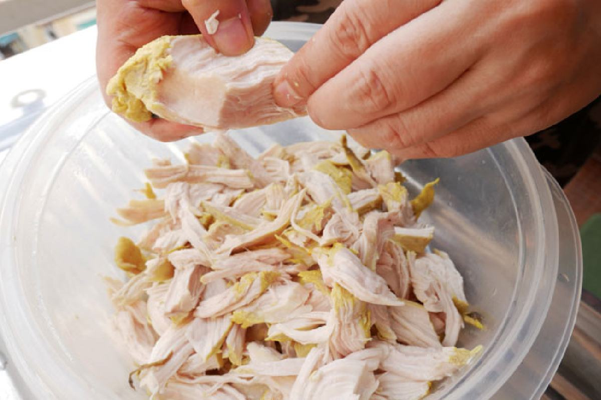
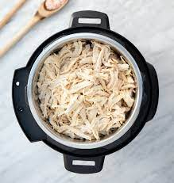
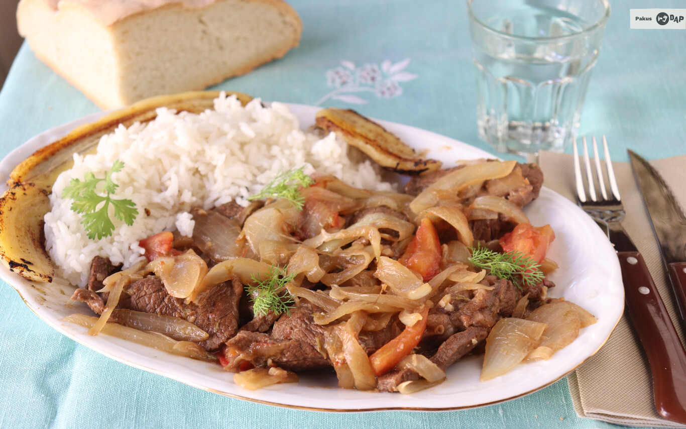

Volver al menu
Sopa de pollo
Ingredientes
- 2 pechugas de pollo (o muslos de pollo)
- 8 tazas de caldo de pollo (puedes usar caldo enlatado o preparar el casero)
- 2 zanahorias, peladas y en rodajas
- 2 ramas de apio, en rodajas
- 1 cebolla, picada
- 2 dientes de ajo, picados
- 1 taza de fideos o arroz (opcional)
- 1 cucharadita de aceite de oliva
- Sal y pimienta al gusto
- Perejil fresco picado (opcional, para decorar)
Paso a paso
- En una olla grande, calienta el aceite de oliva a fuego medio. Agrega la cebolla y el ajo, y saltea hasta que estén dorados y fragantes.

- Agrega las pechugas de pollo (o muslos de pollo) y dóralas por ambos lados.

- Vierte el caldo de pollo en la olla y lleva a ebullición.

- Reduzca el fuego a medio-bajo y agrega las zanahorias y el apio. Cocina a fuego lento durante unos 15-20 minutos, o hasta que las verduras estén tiernas.

- Si deseas agregar fideos o arroz, agrégalos en este punto y cocina según las instrucciones del paquete.

- Retira el pollo de la sopa y desmenúzalo en trozos pequeños con un tenedor.

- Vuelve a colocar el pollo desmenuzado en la sopa y caliéntalo durante unos minutos hasta que todo esté bien caliente.

- Sazona con sal y pimienta al gusto.

- Sirve la sopa caliente, y si lo deseas, decórala con perejil fresco picado.

Resultado final

Volver al inicio